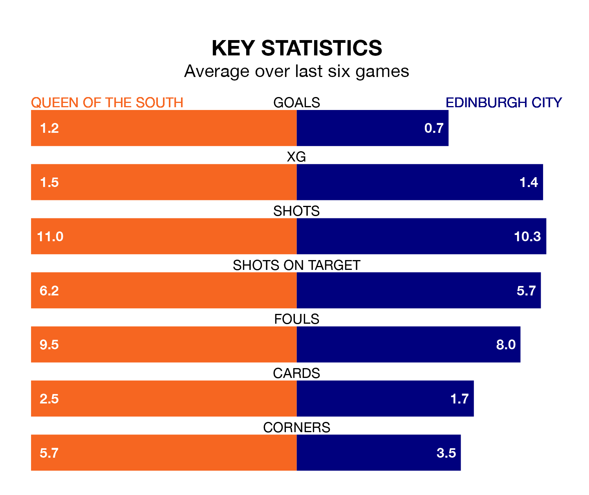

Saturday's match at Palmerston Park sees two relegation candidates play each other, as seventh-ranked Queen of the South host bottom of the table Edinburgh City.
Queen of the South have picked up 34 points from their first 34 League One games, with nine wins and seven draws.
That is 23 points more than Edinburgh have collected, having won two and drawn five.
Queen of the South are in disappointing form in League One, with one win and two draws from their last six games.
With no wins and six losses over that period, Edinburgh's form is worse – they have taken no points from 18, compared to the Doonhamers's five.
In the last 10 years, Queen of the South and Edinburgh have played each other on nine occasions. Queen of the South won eight of them and they drew once.
On average, the Doonhamers scored 2.8 goals and Edinburgh 0.6 in those matches.
Their last meeting was on February 17, when they played out a 1-1 draw.
With 34 goals in 31 games so far this season, City are the league's lowest scorers with 1.1 goals per game. And they are conceding more than average, letting in 88 goals at a rate of 2.8 per game.
The hosts are also below average scorers, with 1.2 goals per game, compared to a league average of 1.6. They have conceded 1.6 goals per game.
Queen of the South's Gavin Reilly is among the league's most creative players, racking up six assists in 26 appearances so far this season, and holding fourth spot in League One's assist charts.
For the away side, Innes Murray, Ryan Shanley, Kieran Offord, Robert Mahon, Scott Mercer and Momodou Sambou have set up the most goals, having laid on two assists apiece to date.
Queen of the South's last match was on April 6, a 2-1 loss against Kelty Hearts, with Reece Lyon getting the goal for the Doonhamers.
Edinburgh lost 3-1 against Kelty Hearts last time out, on March 30, with Oliver McDonald on the scoresheet.
Updated: 11:20 (UTC), 09/04/24